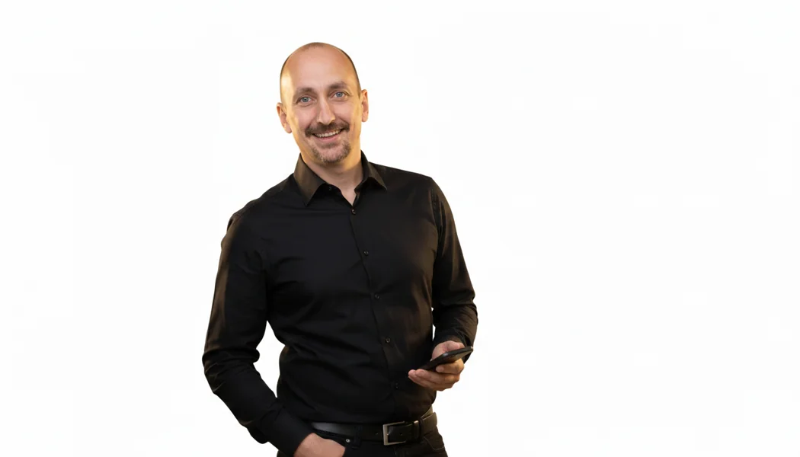

Carlos Augusto Aguiar
Líder de Suporte e Operações de TI. Mais de 20 anos de experiência em tecnologia e mais de 15 anos na coordenação de equipes.
Conheça os produtos →
Por que criei a CAA Tecnologia?
Sou fascinado por tecnologia. Divido minha rotina entre a busca constante por novos conhecimentos no ecossistema de TI, a prática de esportes e o desenvolvimento contínuo.
Durante minha carreira, encontrei uma dificuldade que se repetia: havia muito conteúdo explicando o que os frameworks e as boas práticas recomendavam, mas pouca orientação sobre como aplicar a teoria no dia a dia. Como estruturar um catálogo de serviços? Por onde começar a medir um SLA? Como organizar o inventário de ativos e transformar indicadores em decisões?
Foi pensando nessas dificuldades que criei o site CAA Tecnologia e os produtos ITIL Academy Pro e Service Desk na Prática: Kit de Implantação. Quero compartilhar exemplos, modelos e caminhos de implementação que ajudem profissionais e gestores a levar o conhecimento para a operação real, sem prometer soluções mágicas ou resultados iguais para todas as empresas.
Minha trajetória
Atuo há mais de 20 anos em Tecnologia da Informação, sendo mais de 15 anos na coordenação de equipes de Service Desk, Field Service, NOC, Desenvolvimento e Implantação. Minha atuação conecta gestão de pessoas, qualidade do atendimento e eficiência financeira.
Atualmente, coordeno cinco profissionais em uma operação que atende aproximadamente 2.000 usuários, em uma unidade com 100 clientes. Meu escopo inclui a gestão de cerca de 2.500 ativos de TI e um orçamento de R$ 2 milhões.
Conhecimentos e qualificações
Tenho experiência em IT Service Management (ITSM), IT Asset Management (ITAM), gestão de incidentes, problemas e mudanças, fornecedores, indicadores de desempenho e melhoria contínua. Conhecimento em Six Sigma, Scrum, ITIL, HDI-SCM, COBIT, ISO 20000, ISO 27001 e LGPD.
Meu propósito
Transformar conhecimento técnico em aplicação prática. Acredito que aprender um conceito é importante, mas saber como utilizá-lo para resolver um problema é o que realmente faz a diferença.
Explore os produtos da CAA Tecnologia →